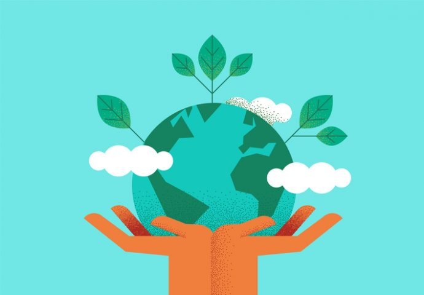
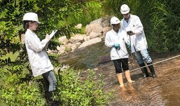
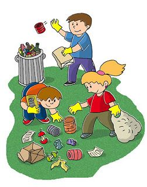
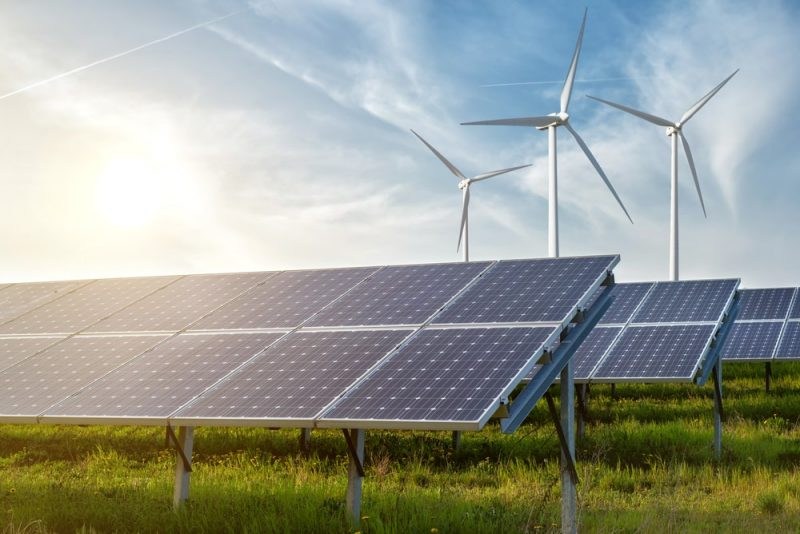
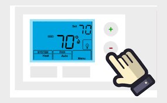
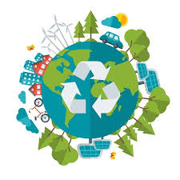
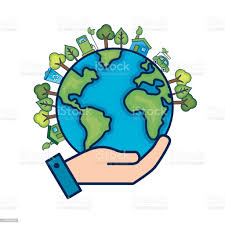

El Cuidado del Medio Ambiente

El Cuidado del Medio Ambiente representa a todas aquellas conductas que los seres vivos deben tomar en pro a la salud de la naturaleza.La finalidad es hacerlo un medio con más oportunidades y más provechos que satisfacen la vida de todas las generaciones.¿Te gustaría aprenderlo todo sobre el cuidado del Medio Ambiente? ¿Te interesa conocer por qué es importante hacerlo y cuá les son las medidas para cuidar nuestro planeta?
Cada factor del Medio Ambiente es modificante del sistema, es decir, cada uno de ellos puede determinar el curso, el avance y el deterioro de su existencia. Por este motivo, hacer hincapié en la recuperación diaria de la salud vital del ambiente es el objetivo.
El medio ambiente se divide en un ambiente físico, biológico y socioeconómico. ¿Quieres saberlo todo sobre el Cuidado del Medio Ambiente?
¿Que es el Medio Ambiente?
La palabra medio ambiente se usa más comúnmente en referencia al ambiente "natural", o la suma de todos los componentes vivos y los abióticos que rodean a un organismo, o grupo de organismos.
Si eres un verdadero amante del Medio Ambiente, es probable que quieras saber cómo puedes dedicarte a trabajar en el mismo. En concreto, el del cuidado del medio ambiente es uno de esos sectores que, en la actualidad, posee numerosas salidas laborales. Por eso, si el Medio Ambiente es lo tuyo, conocer más acerca del cuidado del medio ambiente es perfecto para ti.Para trabajar en el cuidado del medio ambiente, es importante que te formes y te especialices en el sector. Se trata de un sector de alta responsabilidad, ya que, en parte, de ti dependerá que el Medio Ambiente continúe siendo tal y como lo conocemos. ¿Quieres descubrir cómo trabajar en este sector? ¿Quieres descubrir las principales salidas laborales? ¡Vamos!
Para comprender cuáles son las salidas profesionales de este sector, es importante conocer sus perfiles profesionales. ¿Quieres conocer algunos de los principales empleos del sector medioambiental? Aunque existen otras muchas salidas laborales, estas son algunas de las más habituales. ¡Vamos a ver de qué se tratan!:
- Agente forestal
. Este profesional se ocupa, entre otras cosas, de garantizar la seguridad del medio ambiente. Por ejemplo, participan en la extinción de incendios forestales y trabajan por el aprovechamiento respetuoso de los recursos forestales.

- Agricultor ecológico
. La agricultura ecológica busca obtener alimentos con todas sus propiedades, sin dañar al medio ambiente y usando solamente productos beneficiosos para el mismo. Entre otras cosas, se opone al uso de productos químicos de síntesis.
.jpeg)
- Ingeniero ambiental
. Se encarga de conocer y estudiar los procesos medioambientales. De esta forma, se conseguirán evitar.

- Ecodiseñador
. Este profesional participa en los procesos de diseño de producto, aportando una visión respetuosa con el medio ambiente.
.jpeg)
- Analista ambiental
. Trabaja en colaboración con empresas aportándoles su punto de vista sobre la actividad empresarial y el cuidado del medio ambiente. Asó, se consiguen empresas más respetuosas.
- Auditor ambiental
. El auditor ambiental es quien se ocupa de estudiar si una empresa cumple o no la normativa vigente en materia medioambiental.
.jpeg)
- Educador ambiental
. La educación ambiental es un pilar fundamental en nuestra sociedad, ya que permite a la sociedad hacerse más consciente de las problemáticas que posee el medio ambiente. ¡Es responsabilidad de todos!

¿Que podemos hacer para cuidar el medio ambiente?
Podemos pensar que nosotros, personas corrientes,no podemos hacer nada al respecto, que son las grandes empresas o gobiernos los que tienen la obligación de tomar las medidas necesarias para acabar con este problema, pero no, lo cierto es que absolutamente todos somos responsables del maltrato que sufre nuestro planeta y que sí está en nuestra mano cambiar con esto con cualquier acción por pequeña que sea tanto en nuestro hogar como en nuestra empresa.
Ahora verás cuáles son las medidas más eficaces para preservar el medio ambiente y para mantenerlo cuidado; a pesar de todas las condiciones que en ocasiones puedan limitarlo.
- separando la basura

- utilizando productos reutilizables

- uso del termostato

- uso de transporte publico
- uso de energias renovables

En Conclusión
El Medio Ambiente es la obra más grande de Nuestro Señor, es por eso que debemos cuidarla y conservarla para bien de nosotros mismos y de todos los seres vivos que habitan nuestro planeta. Causas como la destrucción de la capa de ozono, la contaminación del agua, el dióxido de carbono, acidificación, erosión del suelo, hidrocarburos clorados y otras causas de contaminación como el derramamiento de petróleo están destruyendo nuestro planeta, pero la causa que produce las demás causas somos nosotros mismos…, hay personas que no les importa tirar una lata en la calle o un papel, o cualquier otra cosa, sabiendo que cada vez más están contaminando el ambiente, lo correcto sería colocar la basura o los residuos en la papelera o llevarlo al basurero más cercano que se encuentre en la calle, con respecto a la contaminación del aire los conductores debería buscar la forma de que su vehículo no origine tanto dióxido de carbono, que es totalmente da&nyilde;ino así como también los ácidos usados para las plantas, también los insecticidas y demás sprays químicos, para la capa de ozono que es muy importante para nosotros porque nos protege de los rayos ultravioletas del sol.
